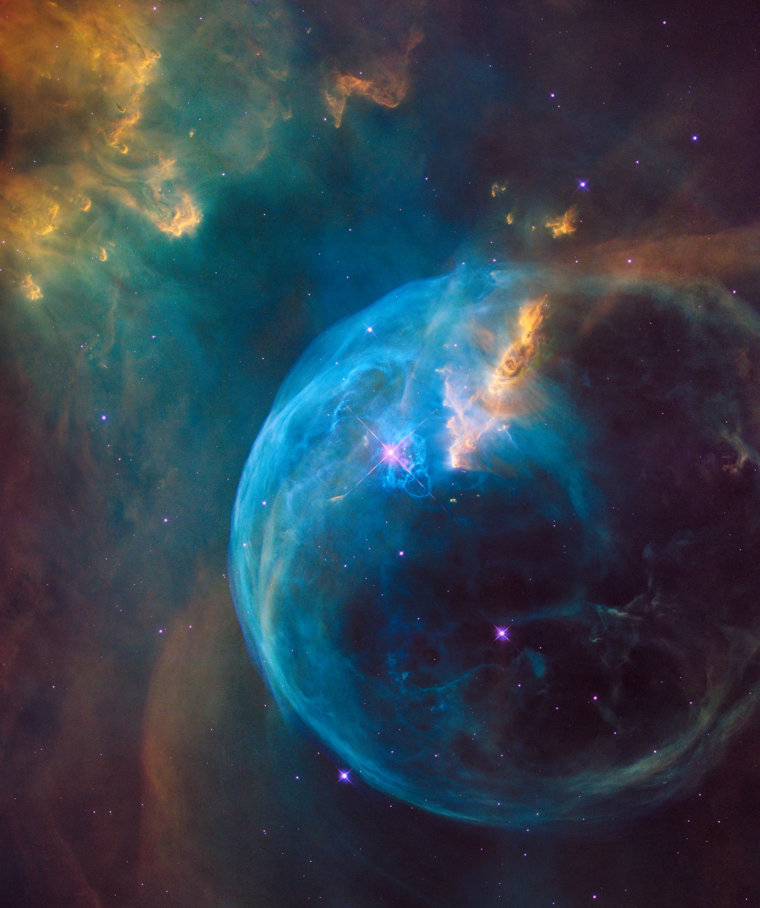
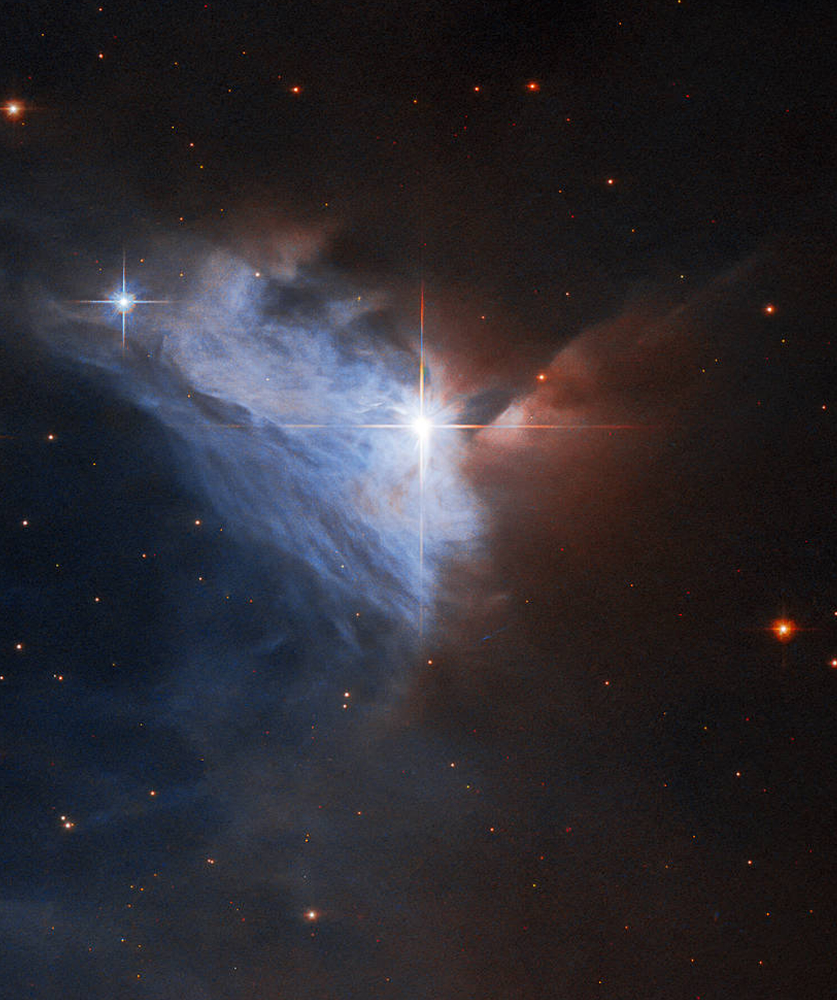
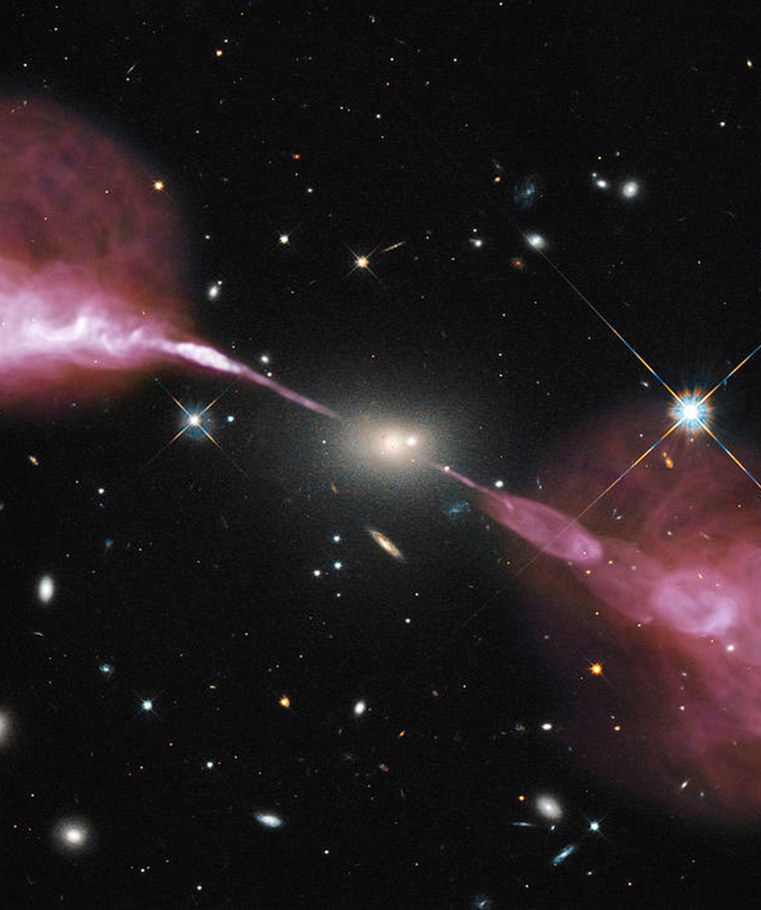
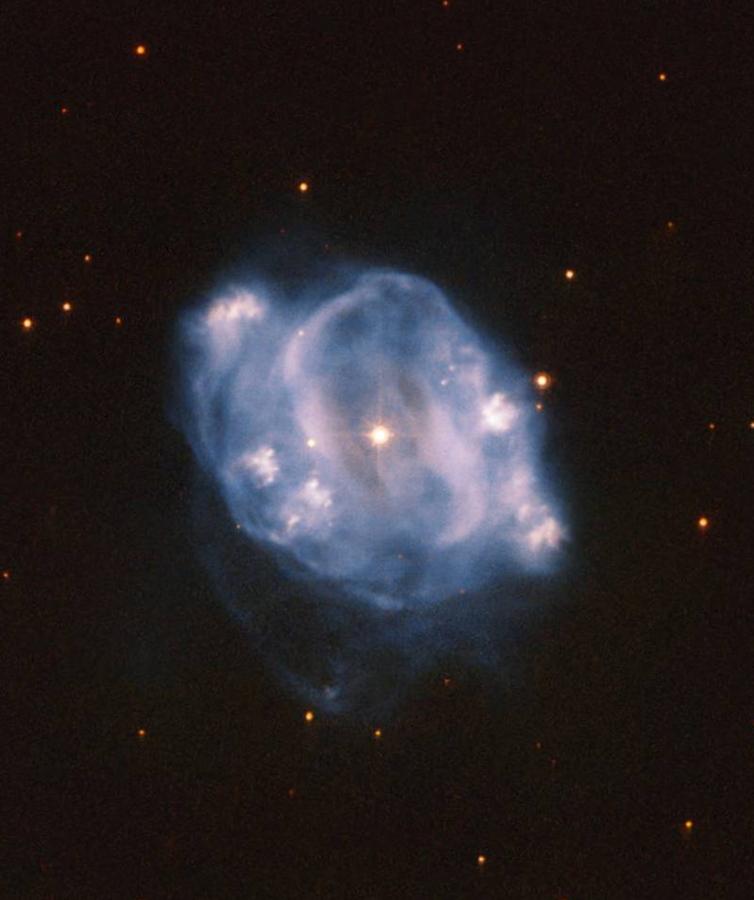
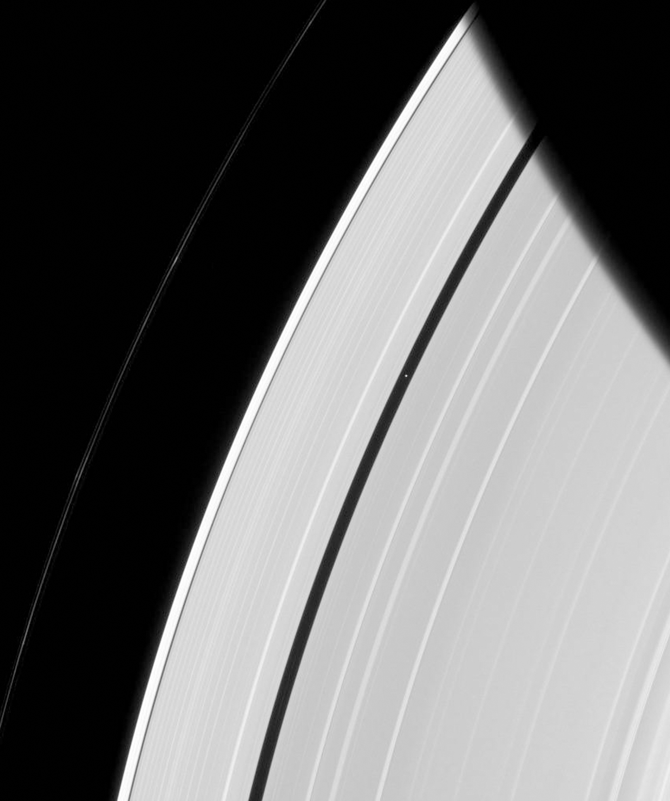
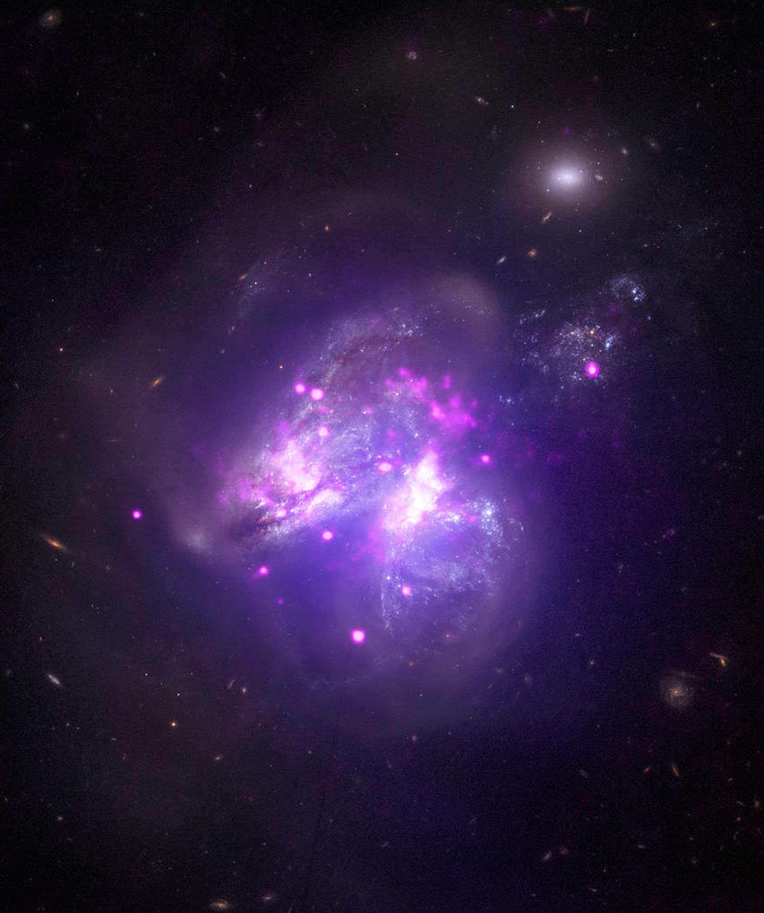

Nebula
성운이란 성간 물질과 수소로 이루어진 구름이다. 많은 성운들은 성간물질이라 불리는 가스의 중력 수축으로부터 형성된다.
NGC 2313
방출 성운으로, 자신의 빛을 발산하는 가스 구름이다. 오른쪽 절반은 짙은 먼지 구름에 가려저 있는 상태로, 만화성운이라고 불린다.
Hercules A
타원 은하 헤라클레스 A의 중심부에 있는 초거대 블랙홀의 모습, 중력 에너지로 움직이며 거대한 제트선을 뿜어내고 있다.
NGC 5307
지구로부터 약 1억 4천만 광년 떨어진 곳에 위치, 두 은하가 합쳐지고 있으며, 각 은하에서 부분적으로 혼합된 별이 탄생하고 있다.
Peggy
 토성의 고리에 있는 작은 달
토성의 달 중 타이탄과 엔셀라두스의 탄생의
비밀을 알 수 있을 것으로 기대
Galactic Goulash
지구로부터 약 1억 4천만 광년 떨어진 곳에 위치한 은하,
두 은하가 합쳐지고 있으며,
엄청난 양의 적외선을 방출하고 있다.